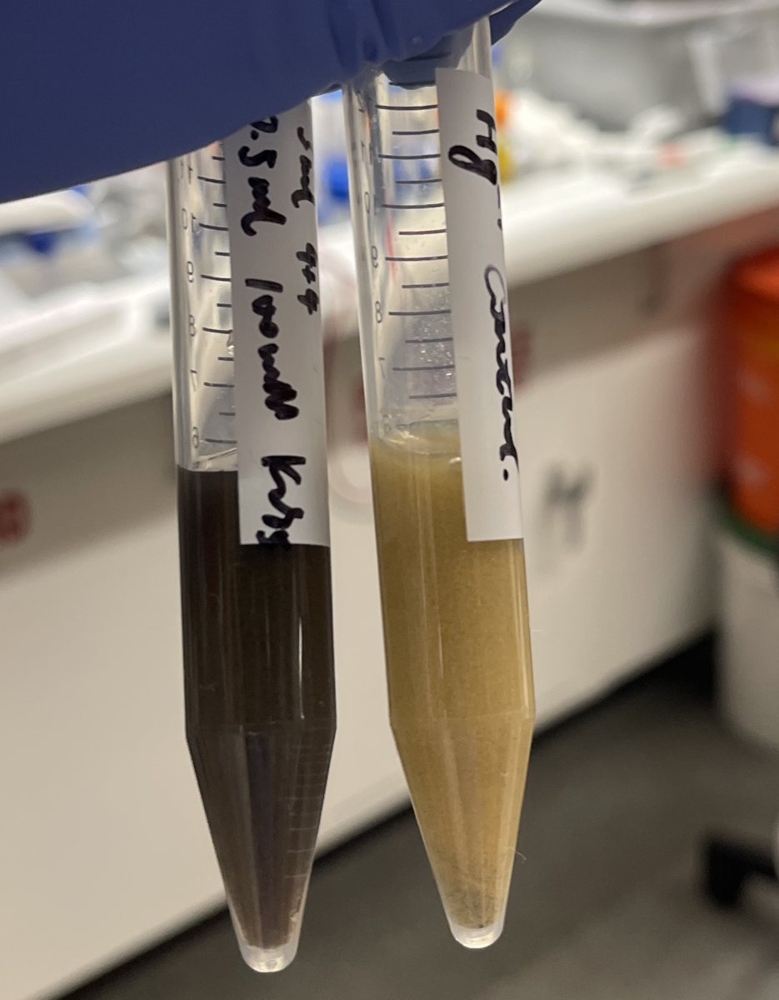

Application for Physical Intelligence API BETA
Some chemistry data only shows up when an embodied agent runs and watches the reaction
RAILab builds robotic hardware for chemistry and biology labs and collects lab data that can only be explained by the motion that produced it. We want to let a Physical Intelligence model explore a reaction with its own hands, find the motion profiles that produce different products, and tell us what separates them.
01Who we are
RAILab is a startup building hardware infrastructure for chemistry and biology labs. We collect lab data that needs an embodied explanation: data where the result depends on how an operation was physically carried out.
Alan Zhou, Founder & CEO, is a PhD candidate in the Department of Civil & Environmental Engineering, and a hardware and robotics engineer with bench scientist experience. He has built automation for powder-weighing-heavy lab workflows, deployed at UIUC, Persist.AI, WUSTL, and elsewhere.
Sihan Chen, Co-founder & CSO, is a PhD candidate in the Department of Chemistry and an AI + Chemistry researcher. She developed primitives that break general chemistry workflows down into robot motions.
02The problem
Lab automation usually describes chemistry with discrete steps: add A to B, stir, heat, wait. A lot of real lab behavior can't be captured that way.
We found this out by accident. Adding polysulfide (Sn2−) to mercury-containing wastewater (Hg2+) produces visibly different products depending on the stirring profile and how fast the liquid is added.

This is a real issue for our environments. The yellow HgS has poor crystallinity, so it can release Hg2+ back into the water, where it poisons people. Whether a mercury cleanup actually works depends on motion details that nobody records.
And it isn't just mercury. The same kind of problem shows up across bio and chem labs: in cell culture, in drug discovery, and in materials discovery.
03Our approach
We're building our own 3-DOF robot arm that carries an electric pipette. Instead of tuning a few settings ourselves, we want to hand those degrees of freedom to an embodied model and let it explore.
The arm has three motorized axes plus the pipette itself:
| Axis | Actuator | Controls |
|---|---|---|
| Z | Stepper motor | How deep the pipette tip sits below the surface |
| Rz | BLDC motor | Stirring speed and profile |
| Ry | BLDC motor | Angle the liquid is added at |
| Tool | Electric pipette | Dispense volume and rate |
That gives the PI model 3+1 degrees of freedom to explore with:
- Tip depth: how far the tip is submerged.
- Stir rate: a constant speed, or a full stir profile over time.
- Dispense rate: how fast the reagent goes in.
- Tip tilt angle: the angle the liquid is added at.
Each run is a full motion profile, not a fixed set of numbers: how depth, stirring, dispensing and tilt change together over the course of the reaction. The model is free to try profiles we would never think to write down.
To teach the model our hardware, we'll start with about 3 hours of high-quality teleoperated demonstrations on the HgS reaction. Each episode records the operation data (position, velocity and motor current for Z, Rz and Ry over time), the dispensing data from the electric pipette, video of the vessel throughout the reaction, and the outcome: which product formed, and its crystallinity.
04The outcome
Here is what success looks like with a PI model in the loop.
- The PI model learns to run our hardware. Trained on our teleoperation data and video, it controls the arm and the electric pipette directly.
- It explores and finds both crystals. With no chemistry knowledge built in, the model explores within the 3+1 degrees of freedom and finds motion profiles that produce each product: the well-crystallized HgS and the poorly crystalline yellow one.
- It explains what separates the two. Grouping the profiles by the crystal they produced, the model describes how the two categories differ in depth, stirring, dispense rate and tilt.
05Why it matters to Physical Intelligence
This project tests two things that are hard to show with standard robot arms and standard lab tasks.
It runs on task-specific hardware, not a general-purpose arm. A 3-DOF arm carrying a pipette is nothing like the arms PI models usually run on. Getting a PI policy working on it shows the models carry over to the custom, one-off hardware that real labs build.
It shows physical intelligence is a precondition for the data, not only a substitute for the operator. Most robotics-for-science work replaces simple operator jobs like shaking tubes and moving plates. Here the PI model produces new scientific data in chemistry and biology, where the motion itself is the experimental variable.